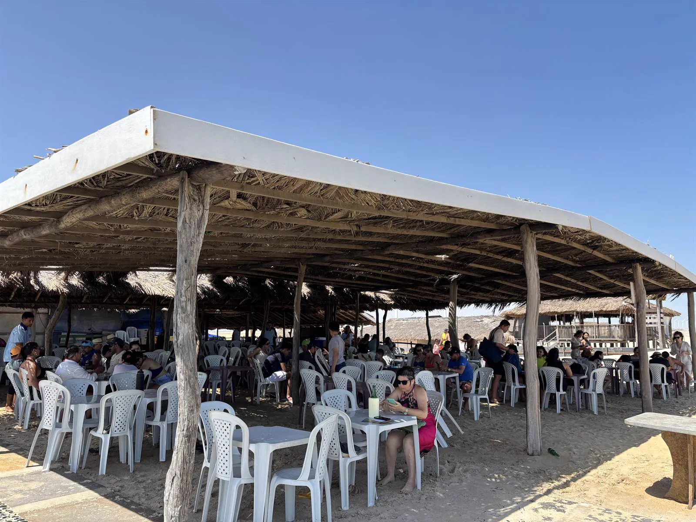

Onde Comer Perto de Barreirinhas
Barraca do Ivan — Praia do Barro Vermelho · 40km de Barreirinhas
“Frutos do mar frescos com mesas diretamente na areia da praia”
Roteiro dos Lençóis Maranhenses
Onde Comer Perto de Barreirinhas
Quem visita os Lençóis Maranhenses e parte de Barreirinhas rumo a Paulino Neves ou Tutóia encontra, a apenas 40km, a melhor parada gastronômica de praia do roteiro: a Barraca do Ivan, diretamente na Praia do Barro Vermelho, em Paulino Neves – MA.
Com mesas na areia, frutos do mar fresquíssimos do litoral maranhense e uma vista inesquecível para o mar, a Barraca do Ivan é muito mais do que um simples almoço — é uma das melhores memórias do roteiro pelos Lençóis. O camarão fresco, o peixe frito e os petiscos são preparados diariamente com ingredientes locais, capturados pelos pescadores da região.
Aberta todos os dias das 9h às 18h, a Barraca do Ivan atende tanto visitantes individuais quanto grupos e excursões com reserva prévia. É o ponto de parada preferido das agências de turismo que passam por Paulino Neves.
40km de Barreirinhas
A Parada de Praia Obrigatória:
Barraca do Ivan em Paulino Neves
Para quem sai de Barreirinhas em direção a Paulino Neves ou Tutóia, há uma parada que nenhum turista deve perder: a Barraca do Ivan, localizada diretamente na Praia do Barro Vermelho, em Paulino Neves – MA.
A apenas 40km de Barreirinhas pela MA-315, a Barraca do Ivan é o único restaurante de praia com mesas na areia da região. Aqui você almoça com os pés na areia, a brisa do mar no rosto e frutos do mar fresquíssimos na mesa — uma experiência completamente diferente dos restaurantes no centro de Barreirinhas. É a parada que transforma um simples almoço em uma das melhores memórias do roteiro pelos Lençóis Maranhenses.
O cardápio tem camarão grelhado, peixe frito, lagosta, mariscos, carne de sol e petiscos variados, além de bebidas geladas. Tudo preparado com o frescor dos frutos do mar do litoral norte do Maranhão — servidos todos os dias das 9h às 18h.
Localização: Praia do Barro Vermelho, Paulino Neves – MA
(40km de Barreirinhas pela MA-315)
Horário: Segunda a domingo, das 9h às 18h
Pedidos agendados têm prioridade
Especialidades: Camarão grelhado, peixe frito, lagosta, mariscos, carne de sol e petiscos frescos do litoral
Grupos e excursões: Atendimento especial com cardápio personalizado para grupos de qualquer tamanho com reserva prévia
WhatsApp Pedidos: (98) 98812-6176
WhatsApp Excursões: (11) 96917-0096
A Barraca do Ivan também é o ponto preferido de parada das excursões que saem de Barreirinhas e Tutóia para os Pequenos Lençóis Maranhenses. Agências de turismo de todo o Brasil incluem o almoço na Barraca do Ivan como parte do roteiro — e os turistas invariavelmente consideram a parada um dos momentos mais marcantes da viagem.
Planejamento
Como Incluir a Barraca do Ivan no seu Roteiro de Barreirinhas
O roteiro mais completo do litoral norte do Maranhão inclui Barreirinhas, os Lençóis Maranhenses, Paulino Neves e Tutóia — e a Barraca do Ivan é a parada de almoço perfeita nesse percurso. Veja como encaixar a visita no seu itinerário:
Roteiro Sugerido: Lençóis Maranhenses + Praia do Barro Vermelho
Manhã em Barreirinhas: Saia cedo de Barreirinhas em direção a Paulino Neves pela MA-315. Ao longo do caminho, aproveite para visitar as lagoas e dunas dos Pequenos Lençóis Maranhenses — formações de dunas brancas com lagoas de água doce cristalina, exclusivas da região de Paulino Neves.
Almoço na Barraca do Ivan: Ao meio-dia, chegue na Praia do Barro Vermelho e almoce na Barraca do Ivan. Camarão, peixe frito, petiscos e bebidas geladas com os pés na areia e o mar à sua frente. Se for em grupo, agende com antecedência pelo WhatsApp para garantir atendimento prioritário.
Tarde na praia: Depois do almoço, aproveite a tarde na Praia do Barro Vermelho — banho, passeio pelas dunas, fotografia do pôr do sol. A praia é deserta e paradisíaca, completamente diferente das praias urbanas.
Seguir para Tutóia ou retornar a Barreirinhas: Ao entardecer, siga em direção a Tutóia (para quem faz o roteiro completo do litoral) ou retorne a Barreirinhas. Quem vai para Tutóia chega ao pôr do sol no Delta do Parnaíba — uma das paisagens mais espetaculares do Nordeste.
Para Excursões Saindo de Barreirinhas
Para excursões saindo de Barreirinhas, a Barraca do Ivan é a parada de almoço mais recomendada pelas agências de turismo da região. Com capacidade para grandes grupos, cardápio personalizado e localização diretamente na praia, é a escolha ideal para quem quer oferecer uma experiência gastronômica memorável para os viajantes. Entre em contato pelo WhatsApp (11) 96917-0096 para reservas de grupos.
Dicas práticas
Dicas para Visitar a Barraca do Ivan
Antes de sair de Barreirinhas em direção à Barraca do Ivan, confira dicas práticas para aproveitar ao máximo sua visita:
Agende com antecedência: Para garantir atendimento rápido — especialmente em grupos — entre em contato pelo WhatsApp (98) 98812-6176 com 1 dia de antecedência. Na alta temporada (julho, janeiro e fevereiro), o movimento aumenta bastante.
Peça o camarão fresco: A especialidade da casa é o camarão capturado localmente pelos pescadores de Paulino Neves. Grelhado na manteiga com alho ou frito, é o prato que define a experiência gastronômica da Barraca do Ivan.
Preços populares: A Barraca do Ivan tem preços muito acessíveis para a qualidade dos frutos do mar servidos. O custo-benefício é excelente — você come camarão fresco na beira da praia por um valor muito justo.
Horário: A Barraca do Ivan funciona todos os dias das 9h às 18h. Para excursões com horário definido, agende com antecedência para garantir atendimento ágil na chegada do grupo.
Pagamento: Aceitamos dinheiro e PIX. Leve dinheiro em espécie para maior praticidade, especialmente para grupos grandes.
Melhor época para visitar: A Barraca do Ivan funciona o ano todo. A estação seca (julho a dezembro) tem menos chuva e as estradas estão em melhor condição. Mas em qualquer época, a praia e a comida são sempre excepcionais.
Dúvidas frequentes
Perguntas Frequentes — Barraca do Ivan
Onde comer perto de Barreirinhas? +
A melhor opção para comer perto de Barreirinhas é a Barraca do Ivan, a apenas 40km pela MA-315, na Praia do Barro Vermelho em Paulino Neves – MA. Com mesas na areia, frutos do mar frescos e vista para o mar, é a parada obrigatória do roteiro dos Lençóis Maranhenses. Funciona todos os dias das 9h às 18h.
Tem restaurante na praia perto de Barreirinhas? +
Sim! A Barraca do Ivan fica diretamente na Praia do Barro Vermelho, em Paulino Neves — a apenas 40km de Barreirinhas pela MA-315. É o restaurante de praia mais próximo de Barreirinhas, com mesas na areia da praia, frutos do mar frescos e uma vista incrível para o mar. Funciona todos os dias das 9h às 18h.
Qual o restaurante de frutos do mar mais próximo de Barreirinhas? +
O restaurante de frutos do mar mais próximo de Barreirinhas com mesa na praia é a Barraca do Ivan, a 40km pela MA-315, na Praia do Barro Vermelho em Paulino Neves. Camarão fresco, peixe frito, lagosta e petiscos servidos com os pés na areia — uma experiência que não existe no centro de Barreirinhas.
Onde comer no roteiro dos Lençóis Maranhenses? +
No roteiro dos Lençóis Maranhenses, a parada gastronômica mais recomendada é a Barraca do Ivan na Praia do Barro Vermelho, Paulino Neves, a 40km de Barreirinhas pela MA-315. Frutos do mar frescos com mesas na areia — a experiência mais marcante e autêntica do litoral maranhense.
Tem restaurante entre Barreirinhas e Tutóia? +
Sim! A Barraca do Ivan em Paulino Neves fica exatamente na rota entre Barreirinhas e Tutóia, pela MA-315. É a parada de almoço perfeita para quem percorre o litoral maranhense entre as duas cidades. Camarão, peixe frito e petiscos frescos na beira da Praia do Barro Vermelho — o ponto de parada mais querido do roteiro.
A Barraca do Ivan atende excursões e grupos? +
Sim! A Barraca do Ivan tem estrutura completa para excursões e grupos de qualquer tamanho — com cardápio personalizado e atendimento ágil mediante reserva prévia. É o restaurante preferido das agências de turismo que passam por Paulino Neves. Para reservas de grupo, entre em contato pelo WhatsApp (11) 96917-0096.
Pronto para a melhor parada do roteiro?
Agende seu Almoço na Barraca do Ivan
Se estiver planejando seu roteiro pelos Lençóis Maranhenses e quiser incluir a melhor parada gastronômica de praia da região, entre em contato com a Barraca do Ivan pelo WhatsApp: (98) 98812-6176. Atendemos grupos, excursões e famílias diretamente na Praia do Barro Vermelho, Paulino Neves – MA. A 40km de Barreirinhas, com mesas na areia e frutos do mar fresquíssimos todos os dias.
Explore mais
Conheça a Barraca do Ivan e a Região
Barraca do Ivan
Conheça o melhor restaurante de praia do litoral norte do Maranhão.
Ver página inicial →Cardápio Completo
Camarão, peixe frito, lagosta, petiscos e bebidas. Veja tudo que servimos.
Ver cardápio →Guia de Paulino Neves
Tudo sobre o município, cultura, turismo e a Praia do Barro Vermelho.
Ver guia →Praia do Barro Vermelho
Conheça uma das praias mais bonitas e preservadas do Maranhão.
Ver guia →Excursões e Grupos
Atendimento especial para grupos e agências de turismo com cardápio personalizado.
Ver excursões →Como Chegar
Rotas de carro, traslado e ônibus saindo de Barreirinhas, São Luís e Parnaíba.
Ver rotas →